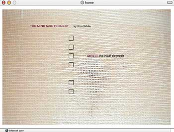

|
THE MINOTAUR PROJECT: Writing the Digital Body
PEDAGOGY: TOWARD READING As a literature that blends multiple "literacies" (visual, media, and print-based/Literary, to name only the most obvious), hypermedia works chart an aggressively exploratory course. In the process of such innovation, the resulting text can present a formidable edifice. A matter of some importance becomes: How do we read the hypermedia text? And, perhaps even more poignantly, how, and where, do we teach it? For my own pedagogical purposes, I propose for this hybrid form of writing a hybrid classroom, combining diverse disciplinary tactics and skills: the high-tech literary workshop. Although I don't believe in artificially splitting reading from writing in the classroom, for the purposes of clarity here I'll begin by addressing reading. The text that instructs  Within a flesh-toned ground some central wound or orifice lies all but concealed by the pattern of the gauze’s weave. White reveals in private correspondence that this central image is a human navel, which further plays on notions of origination and identity, but even without absolute certainty about the anatomy beneath the gauze, we can read from the image the narrative and associative matter elaborated elsewhere in the poem: a body in repair or transformation. Even prior to the cantos themselves, the poet sets in motion with graphical imagery the metaphors she’ll be employing later. In this sense the digital object transgresses the bounds of the “poem” as we might traditionally conceive of it, and in these and other ways “reading” the piece becomes a process that instructs as it evolves through execution. Crafting the reader In addition to sustained attention, the hypermedia text demands from its reader a certain flexibility of mind: the willingness to learn from the text itself how best to read it. Unlike a paperbound volume, here we're confronted with media that, to some extent at least, resist traditional reading practices: they are dynamic, shifting; there is noise as well as motion; even the text on the "page" does not stand still; and more often than not the "story" is nonsequential. As an avant-garde art form, this defiant stance is nothing new. Experimental works in any medium construct their own modes and means of signifying as they go. But the avant-garde implies an elite audience. For those of us unwilling to relegate literature of any form to the fog of obscurity, it behooves us to construct a tactical pedagogy: a system of exploration and explication that strategically introduces—but does not reduce—complex texts. Literary studies scholar Robert Scholes recommends such an approach in his most recent volume, The Crafty Reader2. While he doesn't take up the question of hypermedia works in particular, much of what he says about the teaching of that other quite often arcane and hermetic genre, poetry, applies just as well to digital texts. Scholes frames his argument within the legacy of New Criticism, offering at once a critique and a suggestion for use. In spite of the New Critics' belief in poetry's pinnacle importance and their substantive contributions to reading practice, the New Critical heritage, Scholes argues, has resulted in poetry's systematic and calcified relegation to the cultual periphery in this country. In a word, Scholes identifies this alienation as resulting from the production of fear in readers. Broadly, New Critical approaches to the Literary outlined a system of valuation that manifested in ferocious condemnation of works of insufficient rigor and "taste"—a taste, Scholes suggests, thinly veiling scorn for the popular, public, and oftentimes more "feminine" forms of writing. In essence, New Critical prose, in both critical publications and textbooks, tended toward correction of bad taste. Beyond this qualitative influence, Scholes notes, New Criticism also set in motion the use of a variety of analytical instruments that served only to distance the text from the reader; students, put on the spot to identify literary features such as theme or mode or irony, were inevitably distanced from the text. From a piece of communication, the literary work was transformed into an academic object. The poem became the site of uninspired inquiry, divorced from lived experience. Scholes suggests reviving the potential and remedying the ills of New Critical approaches for contemporary readers. A New Critical close reading can yield substantive benefits—when coupled strategically with an attention to rhetorical purpose. Beginning with an awareness of who is speaking and to whom and to what purpose and in what context, explicit textual understandings such as theme and irony emerge organically, without the distancing that imposing definitional tools on the activity of reading occasions. Instead we prompt students—crafty readers—to approach texts first as human beings, bringing to bear the particular genius for understanding situation and story unique to each. Last, but not least, comes a consideration of the form of the text. Given a rhetorical groundwork, detailed scrutiny of the technical aspects (linguistic, programmatic, graphical or otherwise) of a work serve to root a broad-based understanding in specifics. In a medium in which techne is particularly complex, experimental, and at issue—as in hypermedia works—the diligent reader can hardly justify neglecting such material examination. I, therefore, take Scholes' caution to heart, particularly for teaching purposes: to leverage technical, literary knowledge in service only of a more human, and humane, interaction with a text as a form of communication crafted by a person.>> |